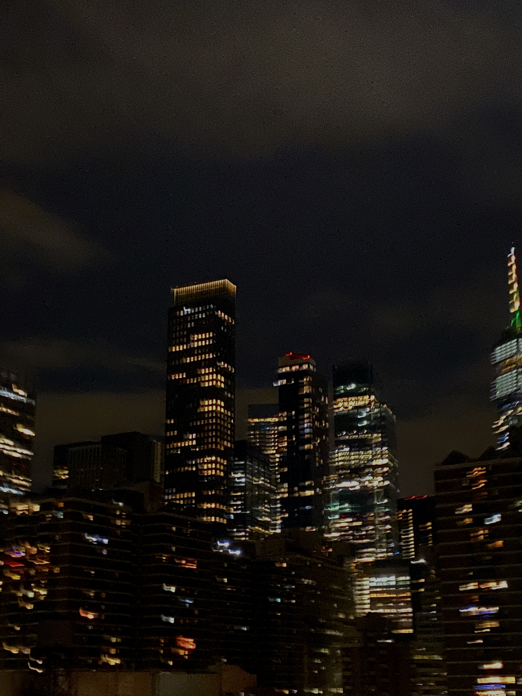
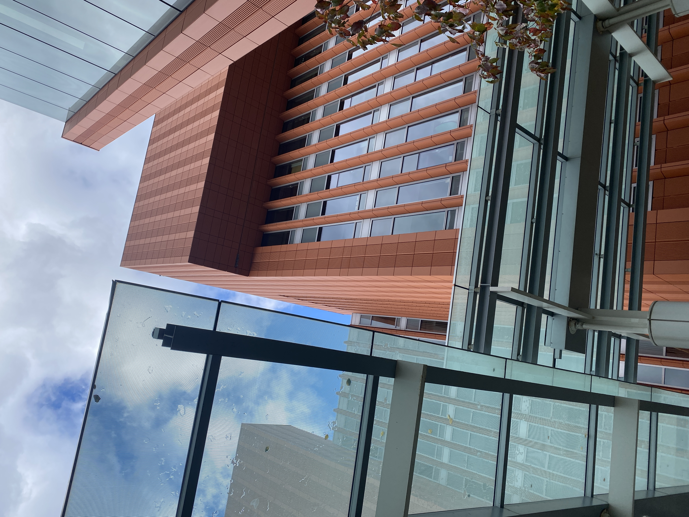
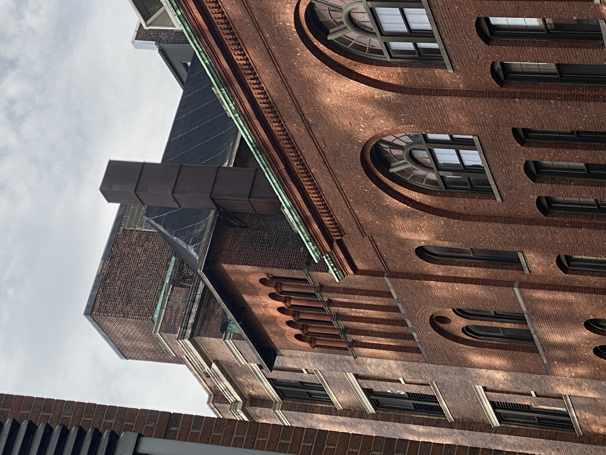
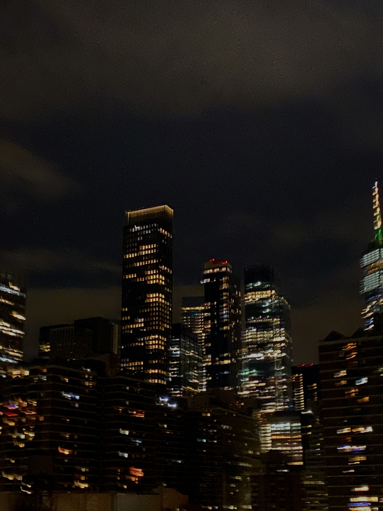
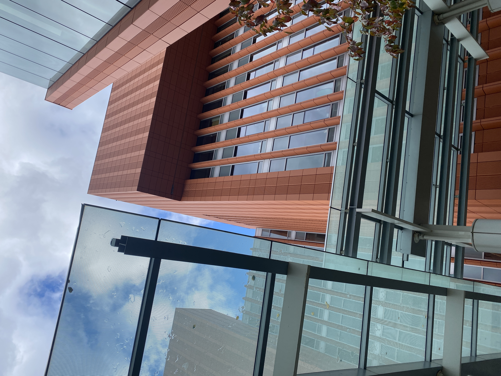
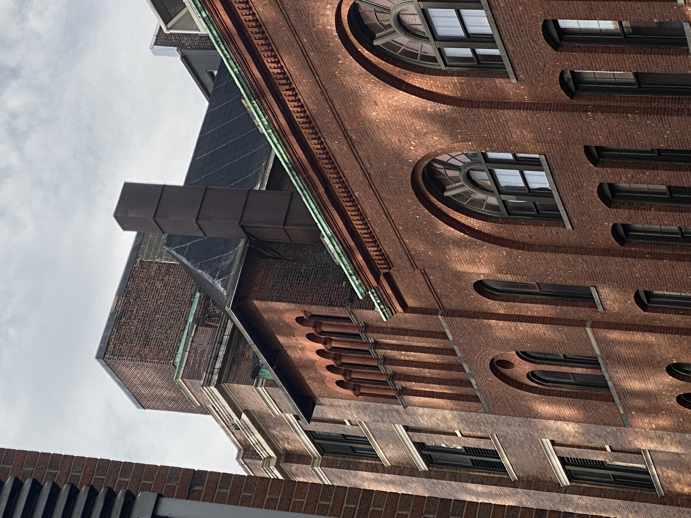
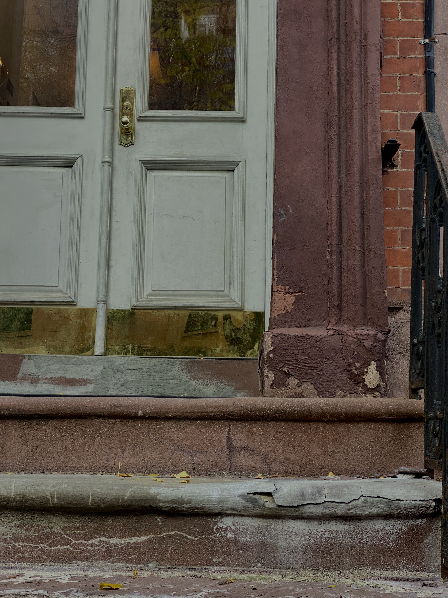
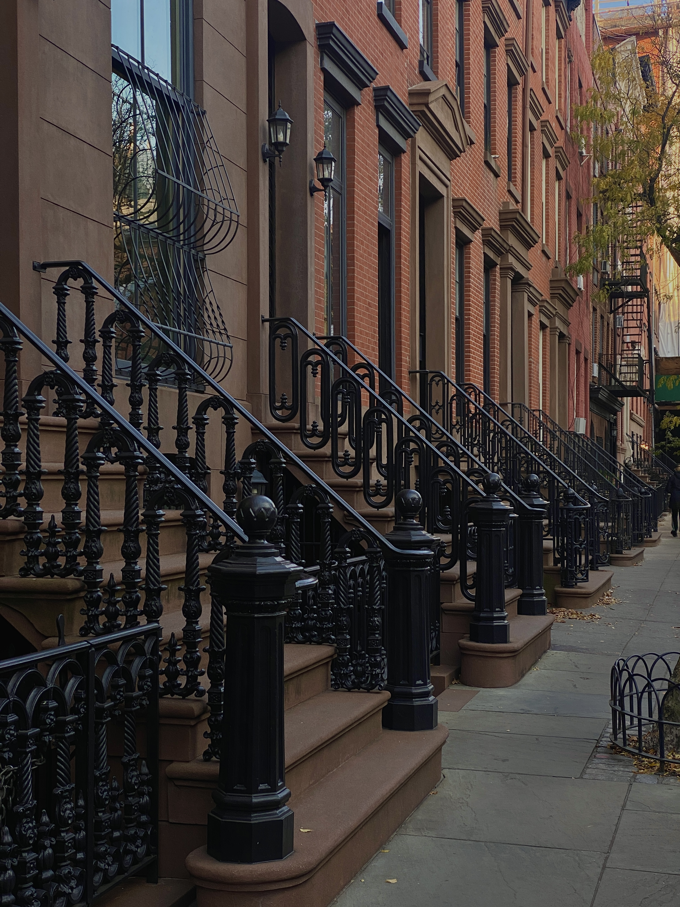
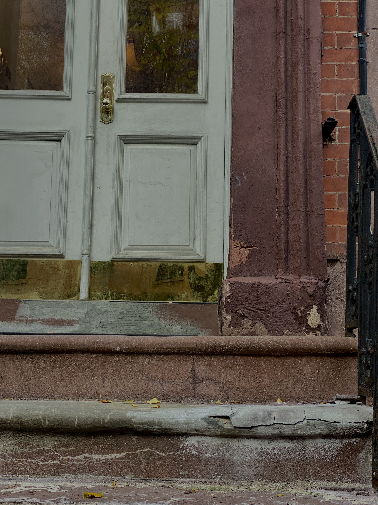
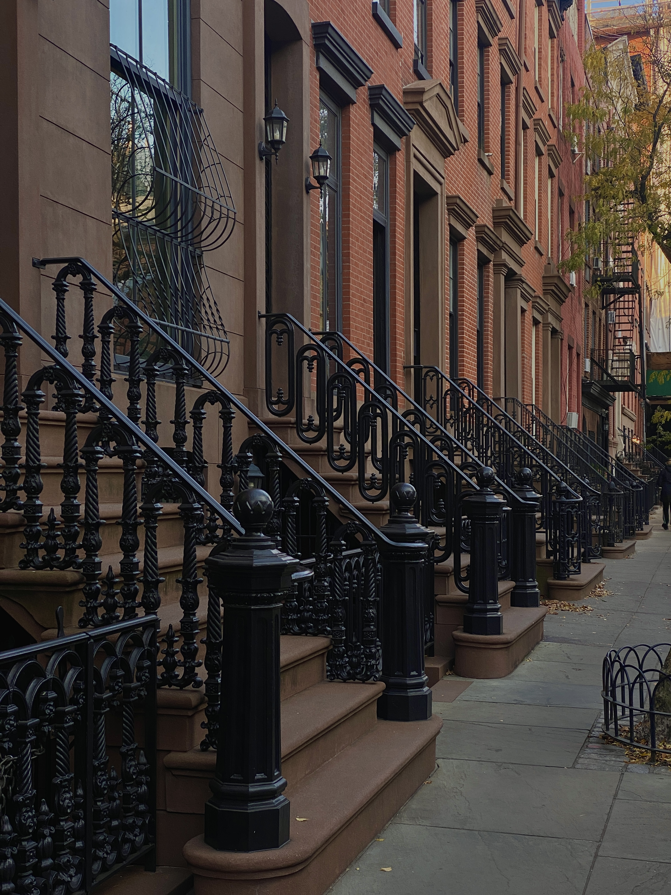

These are some urban photographs I took while traveling.Some of these photos are from Michigan, some from Arizona, and some are from NYC. I like taking urban photographs in every city I visit.
I especially like taking photos of each cities' architecture as architecture says a lot about the culture as well as history of a certain city.

 






 


